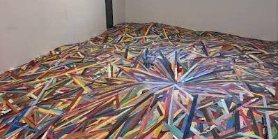
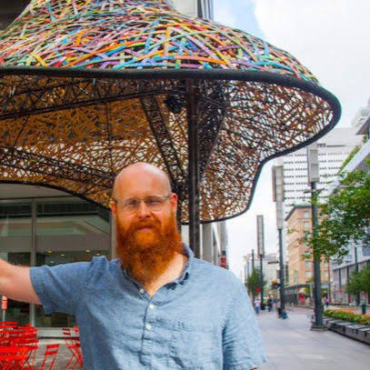
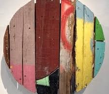
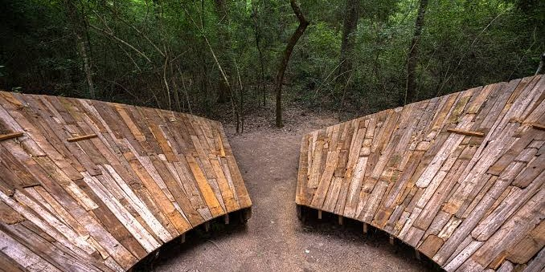
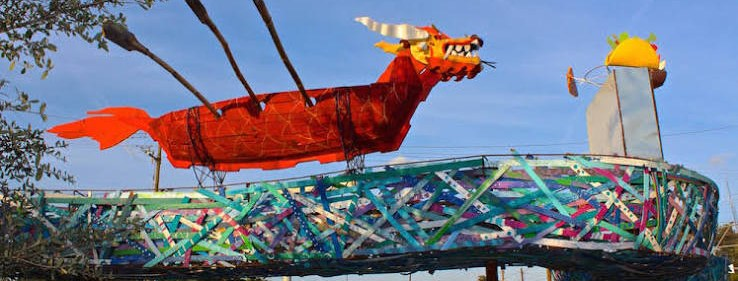
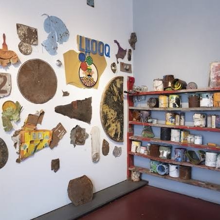
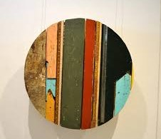
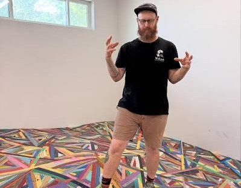
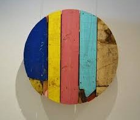

Patrick Renner:Groundswell
The first full monograph on the Houston artist Patrick Renner. Reclaimed wood, painted, cut and assembled by hand, becomes towers, tunnels, benches and finally Groundswell, a wave of colour that fills a room from wall to wall.

The book
Seven chapters trace the work from the artist's first found-object sculptures to his large public commissions. An essay by Catherine Anspon places Renner in Houston's art and community life, and an extended interview lets the artist tell the story in his own words.
Square format, 10 × 10 inches, hardcover, 144 pages on heavy art paper. A trade edition and a limited collector's edition are planned.
Inside
Seven chapters- 01Early found-object sculpture
Where the materials and the method began.
→ - 02Vestigial Structures
Architecture turned into sculpture.
→ - 03Funnel Tunnel
Participation and public space.
→ - 04Bounty
Accumulation, craft and reclaimed materials.
→ - 05Once & Future Architecture
The bridge to Groundswell.
→ - 06Groundswell
The heart of the book: making, installing and living with the work.
→ - 07Recent public works
New work in the city.
→
The work
Selected images










